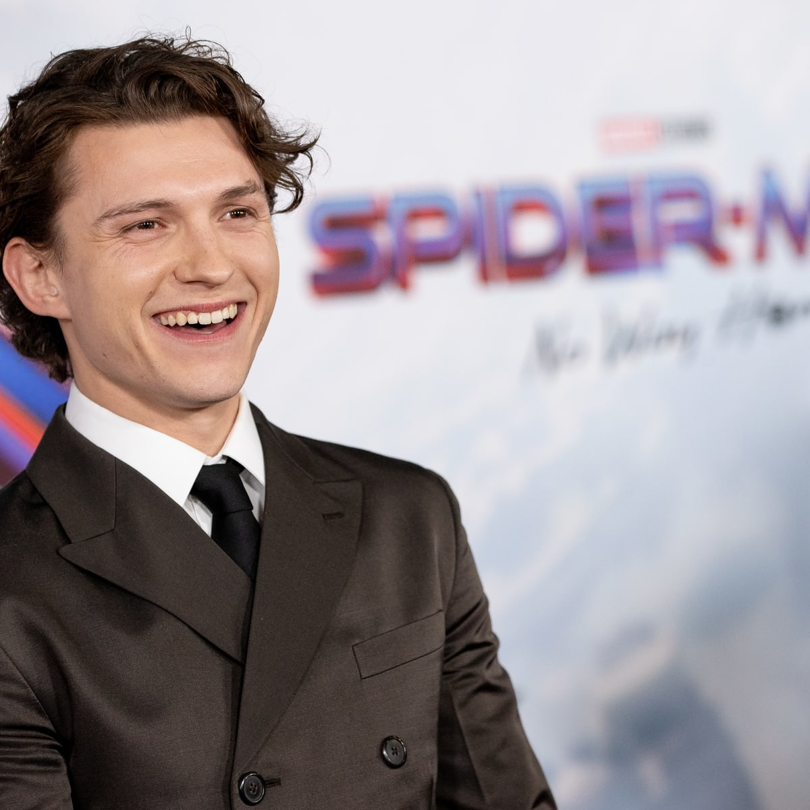
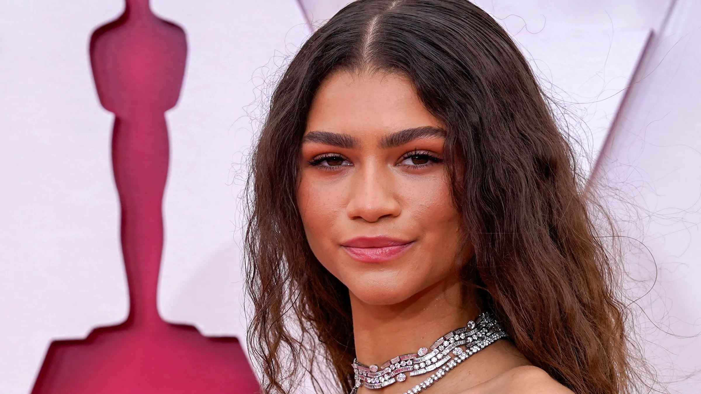
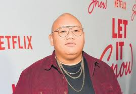
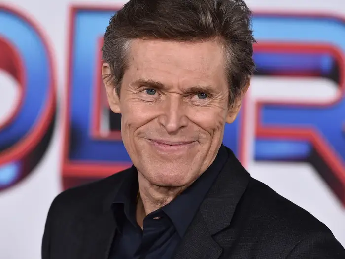

CAST
Spider-Man / Peter Parker
Tom Holland is a British actor best known for playing Spider-Man in the Marvel Cinematic Universe. He began his career on stage in Billy Elliot the Musical and has since become a household name.
MJ
Zendaya is an American actress and singer known for her roles in *Euphoria*, *The Greatest Showman*, and as MJ in the Spider-Man trilogy. She's also a fashion icon and award-winning performer.
Doctor Strange
Benedict Cumberbatch is a British actor famous for his role as Sherlock Holmes and as Doctor Strange in the Marvel Universe. He's also appeared in *The Imitation Game* and *The Power of the Dog*.
Ned Leeds
Jacob Batalon is an American actor known for playing Peter Parker's best friend Ned in the Spider-Man trilogy. He brings comic relief and heart to the series.
Green Goblin / Norman Osborn
Willem Dafoe is an award-winning actor known for intense roles in *The Lighthouse*, *Platoon*, and as Norman Osborn in Sam Raimis original Spider-Man trilogy — returning in *No Way Home* with a vengeance.